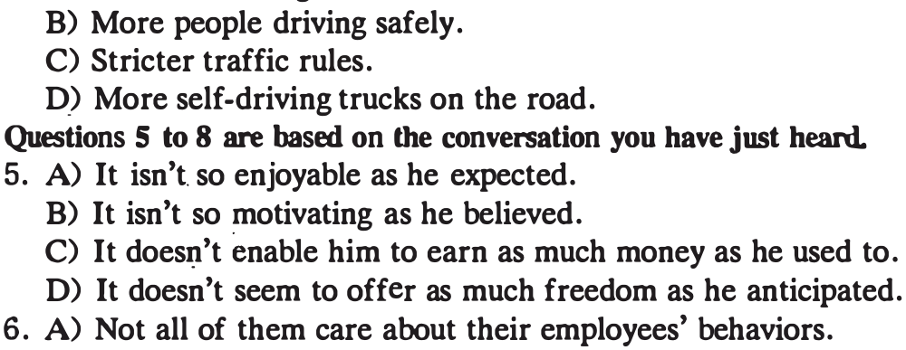
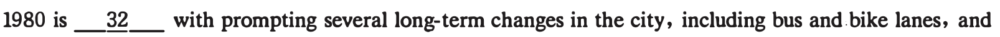
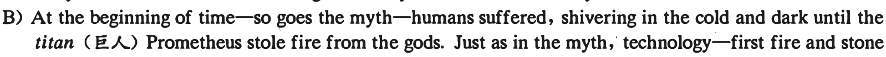
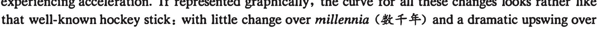
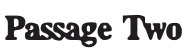

本页部分文字层异常，已保留原图文字区域；这些区域随窗口缩放，暂不能重新换行或复制。
2020年12月大学英语六级考试真题 (二)
Part I Writing (30 minutes)
Directions: For this part, you are allowed 30 minutes to write an essa,y on why students should be encouraged to develop effective communication skills. You should write at least 150 oords but no more than 200 words '.
Part 1[ Listening Comprehension ( 30 minutes)
Section A
Directions: In ·this section, yc;u will hear two long conversations. At the end of each conversation, you will hear four questions. Both the conversation and the questions will be spoken only once. After you hear a question, you must choose the best answer from the four choices marked A), B), C) and D). Then mark the corresponding letter on Answer Sheet 1 with a single line through the centre.
Questions 1 to 4 are based on the conversation you have just heard.
2.
3.
4.

5.
6.
8.
Section B
Directions: In this section, you will hear two JXlSsages. At the end of each passage, you will hear three or four questions. Both the JXlSsage and the questions will be spoken only once. After you hear a question, you must choose the best answer from the four choices marked A ) , B ) , C ) and D ) . Then mark the corresponding letter on Answer Sheet 1 with a single li ne through the centre.
Questions 9 to 11 are based on the passage you have just heard.
9.
11.
Questions 12 to 15 are based on the passage you have just heard.
12.
13.
14.
15.
Section C
Directions: In this section, you will hear three recordings of lectures or talks followed by three or four questions. The recordings will be played only once. After you hear a question , you must choose the best answer frcm the four choices marked A), B), C) and D). Then mark the corresponding letter on Answer Sheet 1 with a single line through the centre.
Questions 16 to 18 are based on the recording you have just heard.
16.
17.
18.
Questions 19 to 21 are based on the recording you have just heard.
19.
本页部分文字层异常，已保留原图文字区域；这些区域随窗口缩放，暂不能重新换行或复制。
20.
21.
Questions 22 to 25 are based on the reconling you have just heard.
22.
23.
24.
25.
Part ][ Reading Comprehension ( 40 minutes)
Section A
Directions: In this section, there is a passage with ten blanks. You are required to select one word for each blank from a list of choices given in a word bank following the passage. Read the passage through carefully before making )Our choices. Each choice in the bank is identified by a letter. PI.ease mark the corresponding letter for each item on Answer Sheet 2 with a single line through the centre. You may not use any of the words in the bank more than once.
Virtually every activity that entails or facilitates in-person human interaction seems to be in the midst of a total meltdown as the coronavirus outbreak erases Americans' desire to travel. Amtrak says bookings are down 50 precent and cancelations are up 300 percent. Hotels in San Francisco are
Universities, now emptying their campuses, have never tried online learning on this ___JJ__. White collar companies like Amazon, Apple, and the New York Times are asking employees to work from home for the 28 future.
But what happens after the coronavirus? In some ways, the answer is: All the old normal stuff. The pa.ndemic  will take- lives, 29 economies and destroy routines, but it will pass. Americans will never stop going to basketball games. They won't stop going on vacation. They'll meet to do business. No decentralizing technology so far-not telephones, not television, and not the internet-has dented that human desire to shake hands, despite technologists' 30 to the contrary.
will take- lives, 29 economies and destroy routines, but it will pass. Americans will never stop going to basketball games. They won't stop going on vacation. They'll meet to do business. No decentralizing technology so far-not telephones, not television, and not the internet-has dented that human desire to shake hands, despite technologists' 30 to the contrary.
Yet there are real reasons to think that things will not return to the way they were last week. Small 31 create small societal shifts; big ones change things for good. The New York transit strike of
本页部分文字层异常，已保留原图文字区域；这些区域随窗口缩放，暂不能重新换行或复制。

women wearing sports shoes to work. The Spanish flu pandemic of 1918 prompted the development of national health care in Europe.
Here and now, this might not even be a question of---33 . It's not clear that the cruise industry
might not even be in place to do what we were doing in 2019.
Section B
Directions: In this section, you are going to read a passage with ten statements attached to it. F.ach statement contains information given in one of the paragraphs. Identify the paragraph from which the information is derived. You may choose a paragraph more than once. F.ach paragraph is marked with a letter. Answer the questions by marking the corresponding letter on Answer Sheet 2.
Slow Hope
A) Our world is full of-mostly untold-stories of slow hope, driven by the idea that change is possible. They are 'slow' in their unfolding, and they are slow because they come with setbacks.

tools, and later farming, the steam engine and industry, fossil fuels, chemicals and nuclear power has allowed us to alter and control the natural world. The myth also reminds us that these advances have come at a price: as a punishment for Prometheus' crime, the gods created Pandora, and they gave her a box filled with evils and curses. When Pandora's box was opened, it unleashed swarms of diseases and disasters upon humankind.
C) Today we can no longer ignore the ecological curses that we have released in our search for warmth and comfort. In engineering and exploiting and transforming our habitat, we have opened tens of thousands of Pandora's boxes. In recent decades, environmental threats have expanded beyond regional boundaries to have global reach and, most hauntingly, are multiplying at a dizzying rate. On a regular basis, we are reminded that we are running out of time. Year after year, faster and faster, consumption outpaces the biological capacity of our planet. Stories of accelerated catastrophe multiply. We fear the breakdown of the electric grid, the end of non-renewable resources, the expansion of deserts, the loss of islands, and the pollution of our air and water.
D) Acceleration is the signature of our time. Populations and economic activity grew slowly for much of human history. For thousands of years and well into early modern times, world economies saw no
real GDP has increased at an enormous speed, and so has human consumption. In the Middle Ages, households in Central Europe might have owned fewer than 30 objects on average; in 1900, this number had increased to 400, and in 2020 to 15,000. The acceleration of human production, consumption and travel has changed the animate and inanimate spheres. It has echoed through natural processes on which humans depend. Species extinction, deforestation, damming of rivers, .occurrence of floods, the depletion of ozone, the degradation of ocean systems and many other areas are all experiencing acceleration. If represented graphically, the curve for all these changes looks rather like

the past decades.
本页部分文字层异常，已保留原图文字区域；这些区域随窗口缩放，暂不能重新换行或复制。
by a new Hercules, a divine engineer, someone who will mastermind, manoeuvre and manipulate our planet. They suggest that geoengineering, cold fusion or faster-than-light spaceships might transcend once and for all the terrestrial constraints of rising temperatures, lack of energy, scarcity of food, lack of space, mountains of waste, polluted water-you name it.
F) Yet, if we envisage our salvation to come from a deus ex machina (解困之神), from a divine engineer or a tech solutionist who will miraculously conjure up a new source of energy or another cure-all with revolutionary potency, we might be looking in the wrong place. The fact that we now imagine our planet as a whole does not mean that the 'rescue' of our planet will come with one big global stroke of genius and technology. It will more likely come by many small acts. Global heating and environmental degradation are not technological problems. They are highly political issues that are informed by powerful interests. Moreover, if history is a guide, then we can assume that any major transformations will once again be followed by a huge set of unintended consequences. So what do we do?
G) This much is clear: we need to find ways that help us flatten the hockey-stick curves that reflect our ever-faster pace of ecological destruction and social acceleration. If we acknowledge that human manipulation of the Earth has been a· destructive force, we can also imagine that human endeavours can help us build a less destructive world in the centuries to come. We might keep making mistakes. But we will also keep learning from our mistakes.
H) To counter the fears of disaster, we need to identify stories, visions and actions that work quietly towards a more hopeful future. Instead of one big narrative, a story of unexpected rescue by a larger than-life hero, we need multiple stories: we need stories, not only of what Rob Nixon of Princeton University has called the 'slow violence' of environmental degradation ( that is, the damage that is often invisible at first and develops slowly and gradually), but also stories of what I call 'slow hope'.
I) We need an acknowledgement of our present ecological plight but also a language of positive change, visions of a better future. In The Principle of Hope (1954-1959), Ernst Bloch, one of the leading
imagine that things could be different'. We need to identify visions and paths that will help us imagine a different, more just and more ecological world. Hope, for Bloch, has its starting point in fear, in
uncertainty, and in crisis: it is a creative force that goes hand in hand with utopian 

architecture, in music, in the movies-in products of the human mind that contain 'the outlines of a better world'. What makes us 'authentic' as humans are visions of our 'potential'. In other words: living in hope makes us human.
J) The power of small, grassroots movements to make changes that spread beyond their place of origin can be seen with the Slow Food movement, which began in Italy in the 1980s. The rise of fast-food restaurants after the Second World War produced a society full of cheap, industrially made foodstuffs. Under the leadership of Carlo Petrini, the Slow Food movement began in Piedmont, a region of Italy with a long history of poverty, violence and resistance to oppression. The movement transformed it into a region hospitable to traditional food cultures-based on native plants and breeds of animals. Today, Slow Food operates in more than 160 countries, poor and rich. It has given rise to thousands of projects around the globe, representing democratic politics, food sovereignty, biodiversity and sustainable agriculture.
K) The unscrupulous  commodification of food and the destruction of foodstuffs will continue to devastate soils, livelihoods and ecologies. Slow Food cannot undo the irresistible developments of the global food economy, but it can upset its theorists, it can 'speak differently', and it can allow people and their local food traditions and environments to flourish. Even in the United States-the fast-food nation-small farms and urban gardens are on the rise. The US Department of Agriculture provides an Urban Agriculture Toolkit and, according to a recent report, American millennials ( -f :M--fO are changing their diets. In 2017, 6 per cent of US consumers claimed to be strictly vegetarian, up from 1 per cent in 2014. As more people realise that 'eating is an agricultural act' , as the US poet and environmental activist Wendell Berry put it in 1989, slow hope advances.
commodification of food and the destruction of foodstuffs will continue to devastate soils, livelihoods and ecologies. Slow Food cannot undo the irresistible developments of the global food economy, but it can upset its theorists, it can 'speak differently', and it can allow people and their local food traditions and environments to flourish. Even in the United States-the fast-food nation-small farms and urban gardens are on the rise. The US Department of Agriculture provides an Urban Agriculture Toolkit and, according to a recent report, American millennials ( -f :M--fO are changing their diets. In 2017, 6 per cent of US consumers claimed to be strictly vegetarian, up from 1 per cent in 2014. As more people realise that 'eating is an agricultural act' , as the US poet and environmental activist Wendell Berry put it in 1989, slow hope advances.
本页部分文字层异常，已保留原图文字区域；这些区域随窗口缩放，暂不能重新换行或复制。
36. It seems some people today dream that a cutting-edge new technology might save them from the present ecological disaster.
37. According to one great thinker, it is most unfortunate if we lose the ability to think differently.
38. Urgent attention should be paid to the ecological problems we have created in our pursuit of a comfortable life.
39. Even in the fast-food nation America, the number of vegetarians is on the rise.
40. The deterioration of the ecological system is accelerating because of the dramatic increase of human production and consumption.
41. It is obvious that solutions must be found to curb the fast worsening environment and social acceleration.
42. Many people believe changing the world is possible, though it may take time and involve setbacks.
43. It might be wrong to expect that our world would be saved at one stroke with some miraculous technology.
44. It is human nature to cherish hopes for a better world.
45. Technology has given us humans the power to change the natural world, but we have paid a price for the change.
Section C
Directions: There are 2 JXlSsages in this section. Each pcmage is followed by sane questions or unfinished statements. For each of them there are four choices marked A), B), C) and D). You should decide on the best choice and mark the corresponding letter on Answer Sheet 2 with a single line through the centre.
Passage One
Questions 46 to 50 are based on the following passage.
Vegetarians would prefer not to ·be compelled to eat meat. Yet the reverse compulsion is hidden in the proposals for a new plant-based "planetary diet." Nowhere is this more visible than in India.
Earlier this year, the EAT-Lancet Commission released its global report on nutrition and called for a global shift to a more plant-based diet and for "substantially reducing consumption of animal source foods." In countries like India, that call could become a tool to aggravate an already tense political situation and stress already undernourished populations.
The EA:T report presumes that "traditional diets" in countries like India include little red meat, which might be consumed only on special occasions or as minor ingredients in mixed dishes.
In India, however, there is a vast difference between what people would wish to consume and what
etc. Policymakers in India have traditionally pushed for a cereal-heavy "vegetarian diet" on a meat-eating population as a way of providing the cheapest sources of food.
Currently, under an aggressive Hindu nationalist government, Muslims, Christians, disadvantaged
. . None of these concerns seem to have been appreciated by the EAT-Lancet Commissicm's representative, Brent Loken, who said "India has got such a great example" in sourcing protein from plants.
But how much of a model for the world is India's vegetarianism? In the Global Hunger Index 2019, the country ranks 102nd out of 117. Data from the National Family Health Survey indicate that only 10 percent of infants of 6 to 23 months are adequately fed.
Which is why calls for a plant-based diet modeled on India risk offering another whip with which to beat already vulnerable communities in developing countries.
A diet directed at the affluent West fails to recognize that in low-income countries undernourished children are known to benefit from the consumption of milk and other animal source foods, improving cognitive functions, while reducing the prevalence of nutritional deficiencies as well as mortality.
本页部分文字层异常，已保留原图文字区域；这些区域随窗口缩放，暂不能重新换行或复制。
• EAT-Lancet claimed its intention was to "spark conversations" among all Indian stakeholders. Yet vocal critics of the food processing industry and food fortification strategies have been left out of the debate; But the most conspicuous omission may well be the absence of India's farmers.
The government, however, seems to have given the report a thumbs-up. Rather than addressing chronic hunger and malnutrition through an improved access to wholesome and nutrient-dense foods, the government is opening the door for company-dependent solutions, ignoring the environmental and economic cost, which will destroy local food systems. It's a model full of danger for future generations.
46. What is more visible in India than anywhere else according to the passage?
47. What would the EAT-Lancet Commission's report do to many people in countries like India?
48. What do we learn from the passage about food consumption in India?
49. What does the passage say about a plant-based diet modeled on India?
50. How does the Indian government respond to the EAT-Lancet Commission's proposals?

Questions 51 to 55 are based m the following passage.
Back in 1964, in his book Games People Play , psychiatrist Eric Berne described a pattern of conversation he called "Why Don't You-Yes But", which remains one of the most irritating aspects of everyday social life. The person adopting the strategy is usually a chronic complainer. Something is terrible about their relationship, job, or other situation, and they moan about it ceaselessly, but find some excuse to dismiss any solution that's proposed. The reason, of course, is that on some level they don't want a solution; they want to be validated in their position that the world is out to get them. If they can "win" the game-dismissing every suggestion until their interlocutor gives up in annoyance-they get to feel pleasurably righteous in their resentments and excused from any obligation to change.
Part of the trouble here is the so-called responsibility /fault fallacy (谬误). When you're feeling hard done by-taken for granted by your partner, say, or obliged to work for a half-witted boss-it's easy to become attached to the position that it's not your job to address the matter, and that doing so would be an admission of fault. But there's a confusion here. For example, if I were to discover a newborn at my front door, it wouldn't be my fault, but it most certainly would be my responsibility. There would be choices to make, and no possibility of avoiding them, since trying to ignore the matter would be a choice. The point is that what goes for the baby on the doorstep is true in all casess even if the other person is 100% in the wrong, there’s nothing to be gained, long-term, from using this as a justification to evade responsibility.
Should you find yourself on the receiving end of this kind of complaining, there’s an ingenious way to shut it down —which is to agree with it, ardently. Psychotherapist Lori Gottlieb describes this as “over validation”. For one thing, you’ll be spared further moaning, since the other person’s motivation was to confirm her beliefs, and now you’re confirming them. But for another, as Gottlieb notes, people confronted with over-validation often hear their complaints afresh and start arguing back. The notion that they’re utterly powerless suddenly seems unrealistic—not to mention rather annoying—so they’re prompted instead to generate ideas about how they might change things.
“And then, sometimes, something magical might happen,” Gottlieb writes. The other person “might realise she’s not as trapped as you are saying she is, or as she feels.” Which illustrates the irony of the responsibility fault fallacy: evading responsibility feels comfortable, but turns out to be a prison; whereas assuming responsibility feels unpleasant, but ends up being freeing.
51. What is characteristic of a chronic complainer, according to psychiatrist Eric Berne?
52. What does the author try to illustrate with the example of the newborn on one’s doorstep?
53. What does the author advise people to do to chronic complainers?
54. What happens when chronic complainers receive over-validation?
55. How can one stop being a chronic complainer according to the author?
Part IV Translation (30 minutes)
Directions: For this part, you are allowed 30 minutes to translate a passage from Chinese into English. You should write your answer on Answer Sheet 2.
港珠澳大桥(Hong Kong-Zhuhai-Macau Bridge)全长55公里,是我国一项不同寻常的工程壮举。大桥将三个城市连接起来,是世界上最长的跨海桥梁和隧道系统。大桥将三个城市之间的旅行时间从3小时缩短到30分钟。这座跨度巨大的钢筋混凝土大桥充分证明中国有能力建造创纪录的巨型建筑。它将助推区域一体化,促进经济增长。大桥是中国发展自己的大湾区总体规划的关键。中国希望将大湾区建成在技术创新和经济繁荣上能与旧金山、纽约和东京的湾区相媲美的地区。